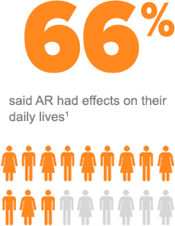
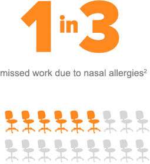
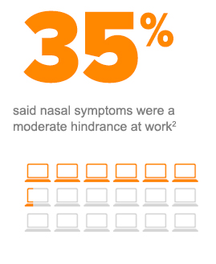
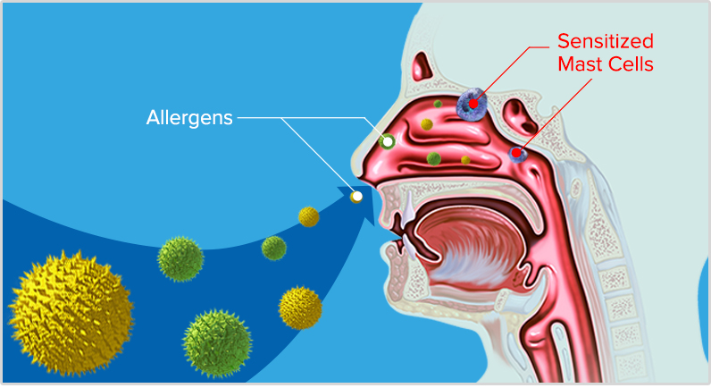
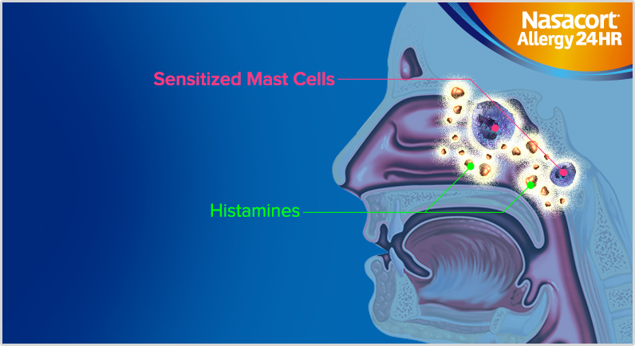
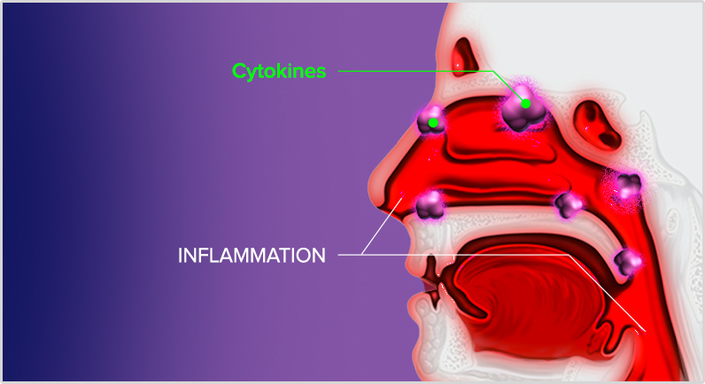
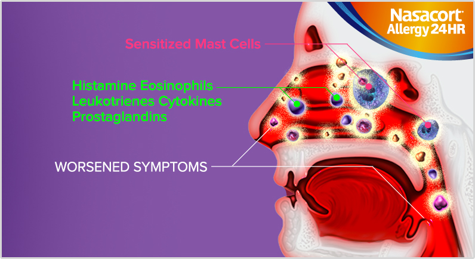
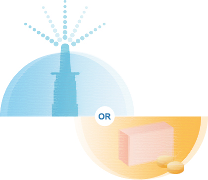
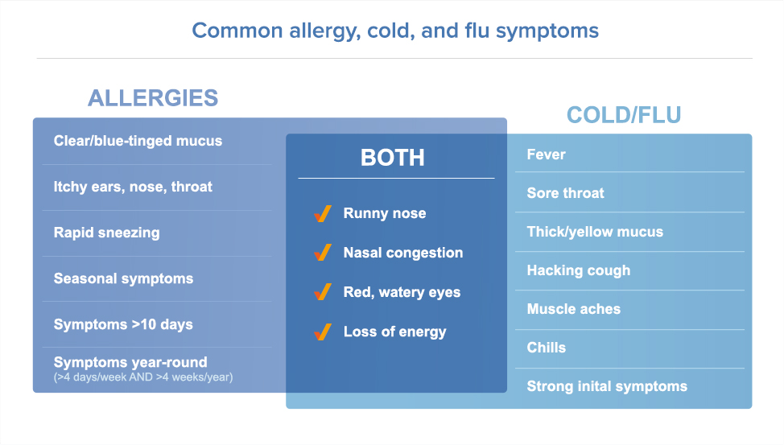

<!DOCTYPE html>
<!--[if IE 8]>         <html class="ie8" lang="en"> <![endif]-->
<!--[if IE 9]>         <html class="ie9" lang="en"> <![endif]-->
<!--[if gt IE 9]><!-->
<html lang="en">
    <!--<![endif]-->
    <head>
        <meta charset="utf-8">
        <meta http-equiv="X-UA-Compatible" content="IE=edge,chrome=1">
        <title>NazacortHCP</title>
        <meta name="description" content="">
        <meta name="viewport" content="width=device-width, initial-scale=1.0">
        <link rel="icon" type="image/ico" href="favicon.ico" />
        <link rel="apple-touch-icon" href="apple-touch-icon.png" />
        <link rel="apple-touch-icon-precomposed" href="apple-touch-icon-precomposed.png" />
        <!--<link rel="stylesheet" href="css/vendor/bootstrap.min.css">-->
        <link rel="stylesheet" href="css/main.css">
    </head>
    <body class="science-of-allergic-rhinitis-section">
        <div class="container">
            <div class="header header-science-of-allergic-rhinitis">
                <div class="header-top">
                    <div class="top-bar">
                        <div class="hcp">For U.S. Healthcare Professionals Only</div>
                        <a class="sanofi-logo" target="_blank" href="http://www.sanofipasteur.com/en/"></a>
                    </div>
                    <div class="blue-bar">
                        <div class="shine"></div>
                        <ul class="utility-nav">
                            <li><a href="#" target="_self">RESOURCES</a></li>
                            <li><a href="#" target="_blank">FAQS</a></li>
                            <li><a href="#" target="_blank">Drug Facts Label</a></li>
                            <li><a href="#" target="_blank">Patient Site</a></li>
                        </ul>
                        <a class="nassacort-logo" target="_self" href="index.html">
                            <span class="little-house"></span>
                        </a>
                        <ul class="main-nav">
                            <li>
                                <a href="the-nasacort-difference.html" class="item">
                                    <span class="active item-left-bg"></span>
                                    <span class="label">Nasacort<sup>&reg;</sup> Difference</span>
                                    <span class="active item-right-bg"></span>
                                </a>
                                <span class="pipe"></span>
                            </li>
                            <li>
                                <a href="dosing-and-efficacy.html" class="item">
                                    <span class="active item-left-bg"></span>
                                    <span class="label">Dosing &amp; Efficacy</span>
                                    <span class="active item-right-bg"></span>
                                </a>
                                <span class="pipe"></span>
                            </li>
                            <li>
                                <a href="whats-a-clucker.html" class="item">
                                    <span class="active item-left-bg"></span>
                                    <span class="label">What’s a Clucker?</span>
                                    <span class="active item-right-bg"></span>
                                </a>
                                <span class="pipe"></span>
                            </li>
                            <li>
                                <a href="science-of-allergic-rhinitis.html" class="item">
                                    <span class="active item-left-bg"></span>
                                    <span class="label">Science of Allergic Rhinitis</span>
                                    <span class="active item-right-bg"></span>
                                </a>
                            </li>
                        </ul>
                    </div>
                </div>
            </div>
            <div class="content section-content">
                <!---------------------------------------- Banner ---------------------------------------->
                <div class="banner">
                    
                    <div>
                        <h1>Science of Allergic Rhinitis</h1>
                        <span class="underlined"></span>
                    </div>
                </div>
                <!---------------------------------------- Statistics ---------------------------------------->
                <div class="statistics">
                    <div>
                        <h2>Allergic Rhinitis Affects Patients&apos; Quality of Life</h2>
                        <p>Allergic rhinitis (AR) is highly prevalent, and is becoming increasingly common in children and adults. Symptoms such as sneezing, rhinorrhea, itchy nose, and nasal congestion have a far-reaching effect on a patient's quality of life.</p>
                        <span class="chart-head">In studies of adults with allergic rhinitis:</span>
                        <div class="graph">
                            
                            
                            
                        </div>
                        <p>For patients with allergic rhinitis, whose symptoms affect their lives, efficacy matters. Nothing is more effective in interrupting the
                            <span class="blue-text">allergic cascade</span> than an OTC INS like Nasacort<sup>&reg;</sup> Allergy 24HR.</p>
                        <p class="right-aligned">Use only as directed.</p>
                    </div>
                </div>
                <!---------------------------------------- About ---------------------------------------->
                <div class="about">
                    <div class="description">
                        <h2>About Allergic Rhinitis</h2>
                        <p>Many of your patients have been using oral antihistamines (OAHs) for years, but they continue to suffer with allergic rhinitis (AR), or are looking for something more.
                            <span class="highlighted">These sufferers</span> of moderate to severe nasal allergies may find relief with Nasacort<sup>&reg;</sup> Allergy 24HR—the only unscented OTC INS. But your patients may not fully
                            <span class="highlighted">understand the difference</span> between these 2 separate classes of drugs, OAHs and INSs, or that
                            <span class="highlighted">OTC INSs can differ in their sensory attributes</span> To understand how OAHs work compared with INSs, it may help your patient to learn about the relationship between allergic rhinitis and inflammation.</p>
                    </div>
                    
                    <p class="right-aligned">Use only as directed.</p>
                </div>
                <!---------------------------------------- Carousel ---------------------------------------->
                <div class="carousel">
                    <h2>How a nasal allergy can develop</h2>
                    <a href="#" id="prev" class="arrow-left"></a>
                    <div class="cycle-slideshow" data-cycle-fx="scrollHorz" data-cycle-timeout="100000" data-cycle-next="#next" data-cycle-prev="#prev" data-cycle-pager="#pager" data-cycle-carousel-visible=1 data-cycle-swipe=true data-cycle-pause-on-hover="true" data-cycle-loader="wait" data-cycle-slides="> div">
                        <div class="item">
                            <h3>1. EXPOSURE</h3>
                            <p>An allergen (like pollen or dust) enters the nose, sensitizing the mast cells</p>
                            
                        </div>
                        <div class="item">
                            <h3>2. early-phase response</h3>
                            <p>Sensitized mast cells release mediators like histamines, which cause itchy nose, runny nose, and sneezing</p>
                            
                        </div>
                        <div class="item">
                            <h3>3. INFLAMMATION</h3>
                            <p>Cytokines bring white blood cells to the affected area, causing irritation and inflammation that lead to congestion</p>
                            
                        </div>
                        <div class="item">
                            <h3>4. LATE-PHASE RESPONSE</h3>
                            <p>The inflammation leads to the release of even more histamine and mediating chemicals, which worsen symptoms</p>
                            
                        </div>
                        <div class="item">
                            <h3>5. ESCALATION</h3>
                            <p>Without anti-inflammatory intervention with an INS like Nasacort® Allergy 24HR, the cycle repeats and builds</p>
                            
                        </div>
                    </div>
                    <a href="#" id="next" class="arrow-right"></a>
                    <div class="cycle-pager" id="pager"></div>
                </div>
                <!---------------------------------------- Video Callout ---------------------------------------->
                <div class="video-callout-container">
                    <div class="video-callout">
                        <div class="content-callout">
                            <h4>INS in Action</h4>
                            <p>Learn how an INS, like Nasacort® Allergy 24HR, can interrupt the allergic cascade.</p>
                        </div>
                        <a class="button" href="#"></a>
                    </div>
                </div>
                <!---------------------------------------- Aditional Information ---------------------------------------->
                <div class="aditional-information">
                    <div class="copy">
                        <h2>Intranasal Steroids or Antihistamines?</h2>
                        <p>As you've seen in your practice,
                            <span class="highlighted">efficacy matters</span> to your allergic rhinitis patients, who get worn down by
                            <span class="highlighted">bothersome symptoms</span> And when it comes to efficacy, nothing is better than an INS.</p>
                        <p>According to the latest medical guidelines, intranasal steroids like Nasacort<sup>&reg;</sup> Allergy 24HR are the most effective class of allergy medication.<sup>1</sup> They have a powerful anti-inflammatory agent that stops your patients'
                            <span class="highlighted">worst nasal allergy symptoms</span>, even
                            <span class="highlighted">congestion</span>
                        </p>
                        <p>For patients who want efficacy for mild to moderate allergic rhinitis symptoms—and don't suffer from nasal congestion—an
                            <span class="highlighted">oral antihistamine</span> (OAH) is a good choice. An OAH can treat the early stage of the allergic cascade (see above). </p>
                        <p>Because of its powerful efficacy, an INS is recommended for patients with moderate to severe allergic rhinitis or for treating the full range of nasal allergy symptoms. When it comes to OTC INSs, patients prefer* SCENT-FREE, ALCOHOL-FREE Nasacort<sup>&reg;</sup> Allergy 24HR over Flonase<sup>&reg;</sup>. Compare to see the
                            <span class="highlighted">Nasacort Difference</span>
                        </p>
                        <p class="footnote">
                            <span>*</span>In a clinical study, based on sensory attributes, patients preferred Nasacort<sup>&reg;</sup> over Flonase<sup>&reg;</sup>.Data on file.</p>
                    </div>
                    
                </div>
                <!---------------------------------------- Graphic container ---------------------------------------->
                <div class="graphic-container">
                    <h2>Allergies, Cold, or Flu?</h2>
                    <p>Stuffy nose, sneezing, fatigue—patients coming to you for help aren't always sure what their symptoms mean. The more you know, the better you can properly diagnose their condition and recommend the
                        <span class="highlighted">correct course of treatment</span>
                    </p>
                    <p>Below are the most common allergy, cold, and flu symptoms. This chart can help your patients get a better idea of their condition. Print it out and ask your patient to identify his or her symptoms. The sooner you've got a better idea of what is going on, the sooner you can help your patient with his or her
                        <span class="highlighted">troublesome symptoms</span>
                    </p>
                    
                    <a data-tracking="" class="callout" href="http://www.google.com">
                        <div class="cta-left-side"></div>
                        <label>Download the Chart</label>
                        <div class="cta-right-side">
                            <div class="share">Share</div>
                            <div class="share-icon"></div>
                        </div>
                    </a>
                    <p class="right-aligned">Use only as directed.</p>
                </div>
            </div>
            <div class="footer">
                <div class="footer-content">
                    <div class="lists">
                        <ul class="footer-col first-col">
                            <li><a href="#" class="active">Home</a></li>
                            <li><a href="#" class="active">Nasacort<sup>&reg;</sup> Difference</a></li>
                            <li><a href="#">Comparing Allergy Treatments</a></li>
                            <li><a href="#">Comparing OTC INSs</a></li>
                            <li><a href="#">Comparing OTC Options</a></li>
                        </ul>
                        <ul class="footer-col second-col">
                            <li><a href="#" class="active">Dosing &amp; Efficacy</a></li>
                            <li><a href="#">Nasacort<sup>&reg;</sup> Dosing: Adults &amp; Children </a></li>
                            <li><a href="#">Proven Efficacy at Dose 1</a></li>
                            <li><a href="#">Powerful Nasal Allergy Relief</a></li>
                            <li><a href="#">Effective Relief in Children</a></li>
                        </ul>
                        <ul class="footer-col third-col">
                            <li><a href="#" class="active">What&apos;s a Clucker?</a></li>
                            <li><a href="#">The Clucker</a></li>
                            <li><a href="#">The Dripper</a></li>
                            <li><a href="#">The Mouthbreather</a></li>
                            <li><a href="#">The Sniffler</a></li>
                        </ul>
                        <ul class="footer-col fourth-col">
                            <li><a href="#" class="active">Science of Allergic Rhinitis</a></li>
                            <li><a href="#">Allergic Rhinitis Affects Patients&apos; Quality of Life</a></li>
                            <li><a href="#">About Allergic Rhinitis</a></li>
                            <li><a href="#">Intranasal Steroids or Antihistamines?</a></li>
                            <li><a href="#">Allergies, Cold, or Flu?</a></li>
                        </ul>
                    </div>
                    <div class="alternative-content">
                        <ul>
                            <li><a href="#">Resources</a>
                                <span class="pipe"></span>
                            </li>
                            <li><a href="#">FAQs</a>
                                <span class="pipe"></span>
                            </li>
                            <li><a href="#">Drug Facts Label</a>
                                <span class="pipe"></span>
                            </li>
                            <li><a href="#">Patient Site</a></li>
                        </ul>
                    </div>
                    <div class="bottom-content">
                        <ul>
                            <li><a href="#">Terms of Use</a>
                                <span class="pipe"></span>
                            </li>
                            <li><a href="#">Privacy Policy</a>
                                <span class="pipe"></span>
                            </li>
                            <li><a href="#">Chattem.com</a></li>
                        </ul>
                        <div class="right-side">
                            <p>All content &reg; 2015 Chattem, Inc. All rights reserved.</p>
                            <div class="logo-footer"></div>
                        </div>
                    </div>
                </div>
            </div>
        </div>
        <script src="js/vendor/jquery-1.11.1.min.js"></script>
        <script src="js/main.js"></script>
        <!--<script src="http://code.jquery.com/ui/1.10.3/jquery-ui.js" type="text/javascript"></script>-->
        <!--<script src="pp/pp.js"></script>-->
        <script src="js/sections/science-of-allergic-rhinitis.js"></script>
        <script src="js/vendor/jquery.cycle2.min.js"></script>
        <script src="js/vendor/jquery.cycle2.swipe.min.js"></script>
    </body>
</html>